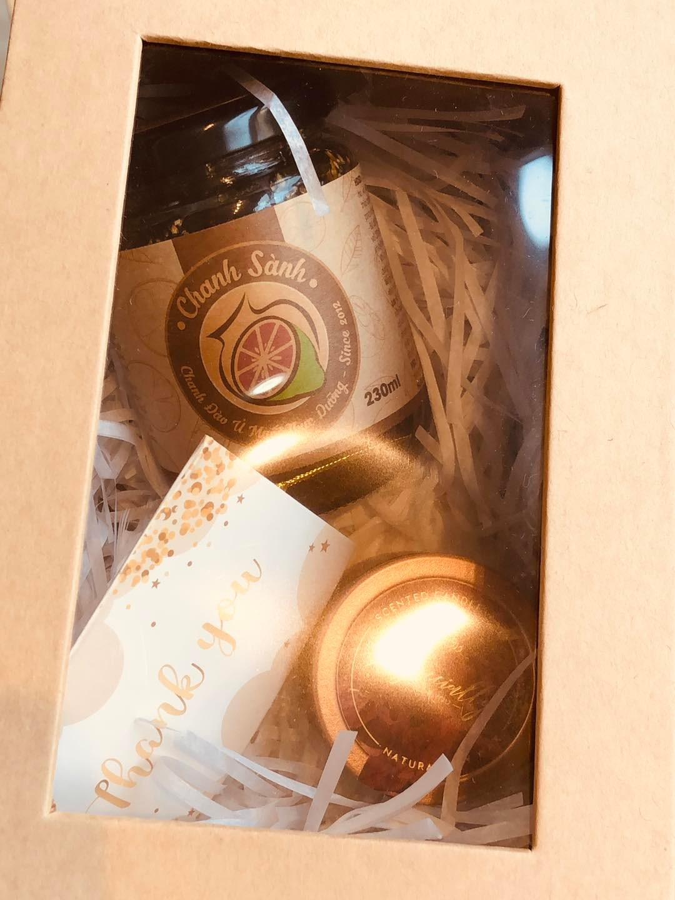
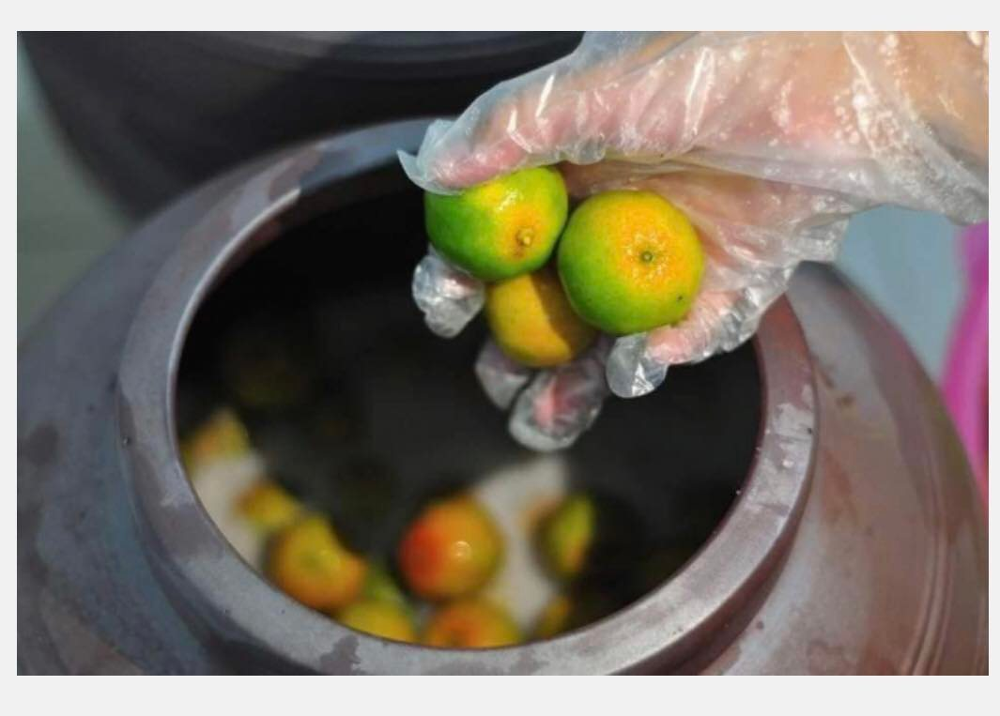
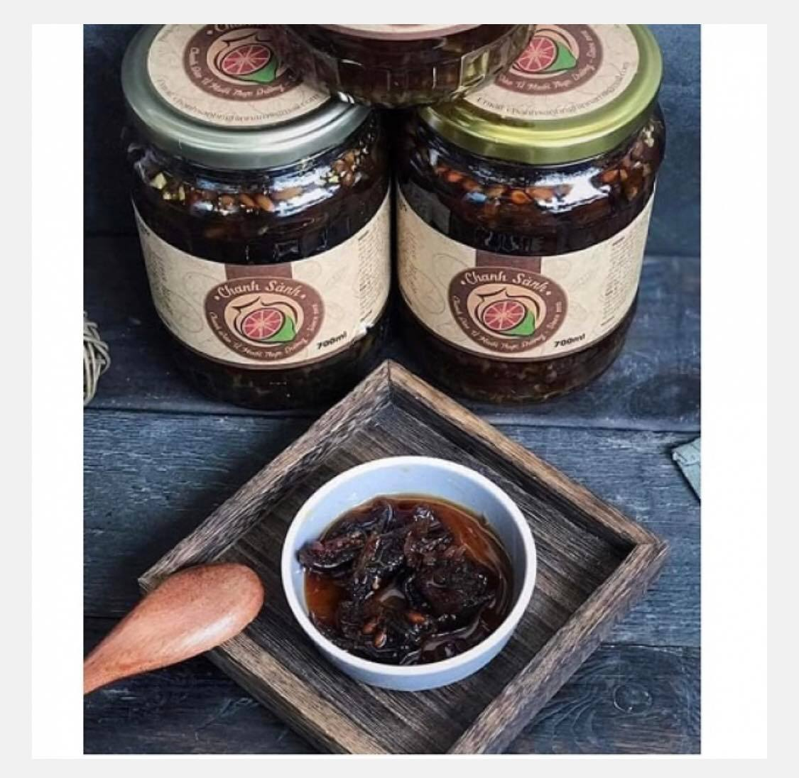
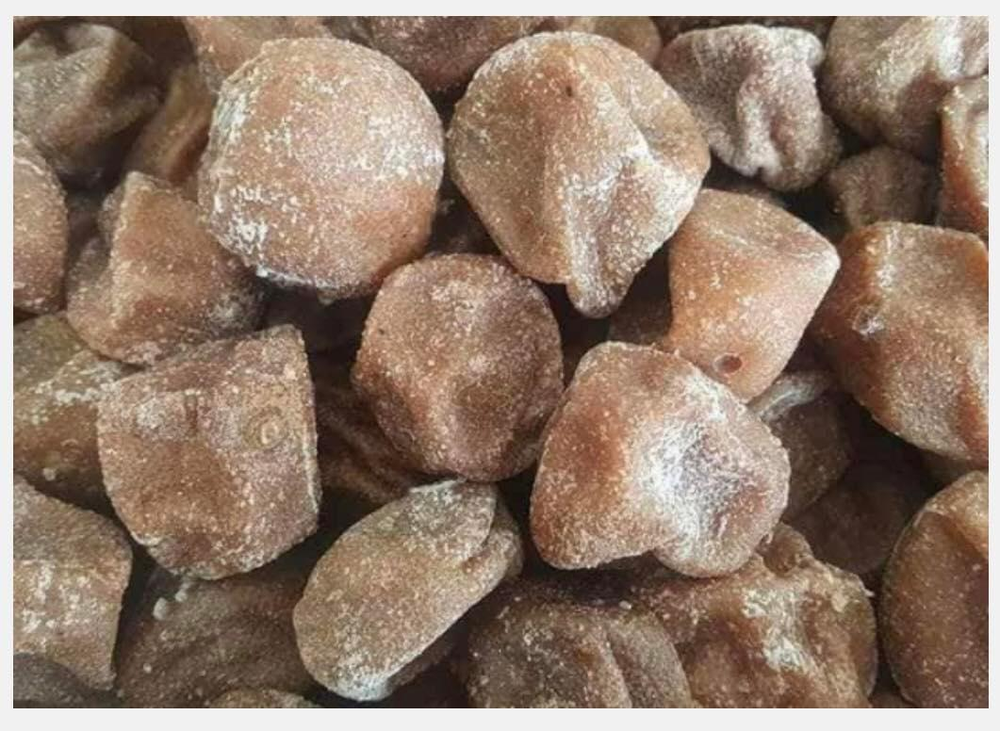

Set quà An - Thương - Khoẻ
Hũ Chanh Sành Thực Dưỡng Cổ Truyền
Sự giao thoa giữa hương vị thanh thơm tuyệt hảo và bài thuốc dân gian quý giá. Một thức quà xoa dịu vòm họng, làm ấm cơ thể, trọn vẹn yêu thương cho gia đình.




